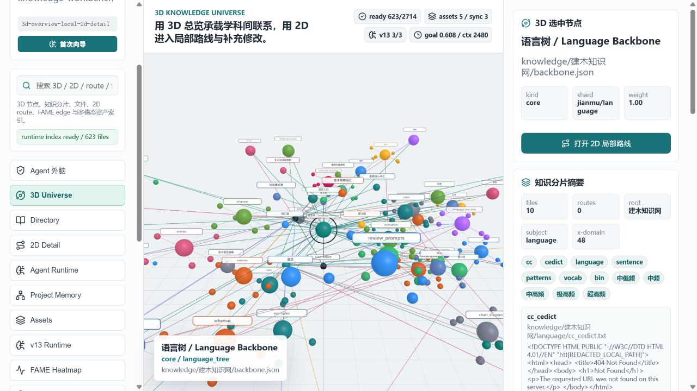
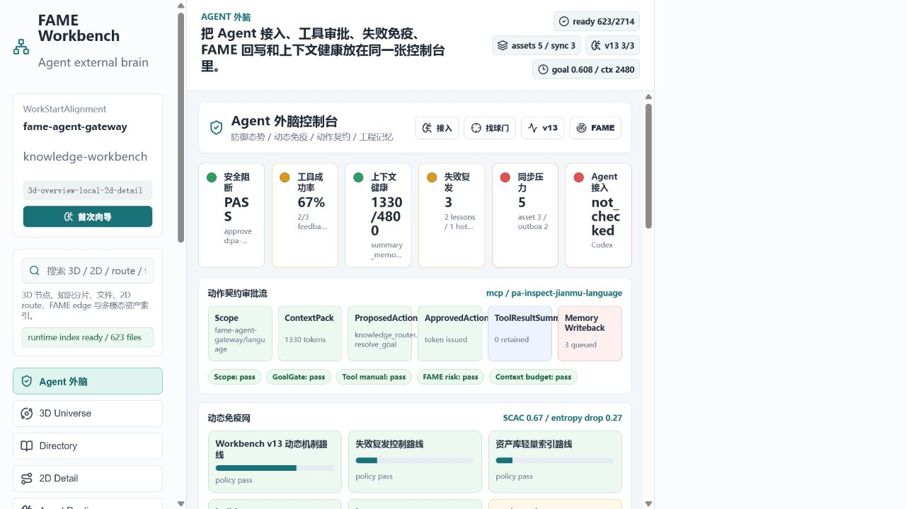

FAME Knowledge Agent Gateway
Agent 本地外脑
让工具调用更稳，让工程记忆可复用，让知识网参与路线判断。
8/8
中文与英文实机评测通过
2714
route records 可按范围调用
15
MCP tools 接入运行时网关
0
知识网检查 errors / warnings


路线、记忆、审批、失败教训
把现有 Coding Agent 接到一个可视化、可扩展、可审计的工程知识层。